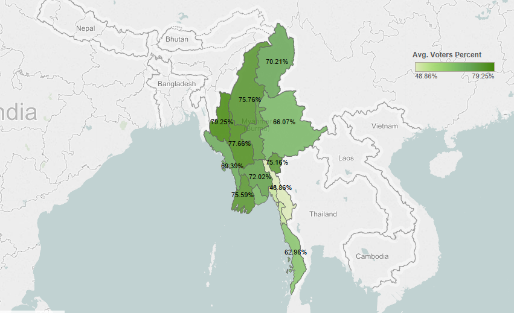
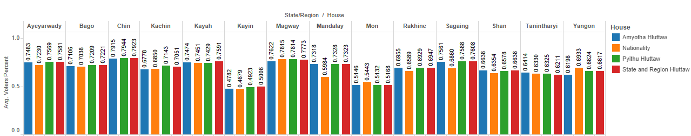

Abstract
In November 2015, Myanmar had its first democratic election after 50 years of military dictatorship, in which the revolutionary National League for Democracy won in a landslide victory. Through exploratory data analysis of data regarding this historic election, we interrogate both the popular narrative of landmark political change in Myanmar as well as the counter-narrative of entrenched power. Aside from the National League for Democracy’s welcomed victory, what other electoral trends or shifts can we observe? What evidence is there for “true” political change? Conversely, what evidence is there for continued military and majority influence in politics? Despite significant missing data, we combine datasets regarding election results and candidate demographics to make observations and provide visualizations regarding voter turnout, demographic nuances, and electoral processes. Where we find particularly complex results—especially in the areas of candidate ethnicity and small margins of victory—we recommend further research. We also recommend other election-related areas in which data science methodologies can make significant contributions.
Map of Myanmar 2015 Voter Turnout by Region
Bar Chart of Myanmar 2015 Voter Turnout by Region
Questions?
Feel free to reach out to any of our team members via email: coults2@uw.edu (Sam Coulter) | gennie@uw.edu (Gennie Gebhart) | kes4052@uw.edu (Kate Sousa).
Or check out our Project Github Repo